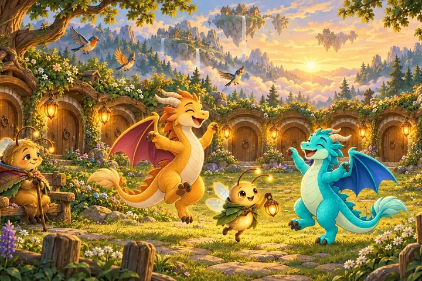
Hemma
Lyktgläntan
Sju dörrar på rad, äldre än någon minns, med varsitt tecken som ingen kan läsa. Bredvid varje dörr en lykta. Förr hette gården Solgläntan.
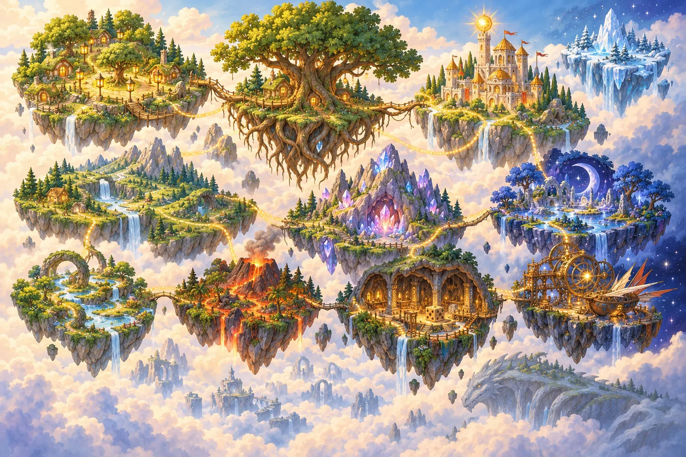
Ur världsboken · Berättad av Gammelmor Glimma
En skärgård som svävar över molnen, för att någon en gång värmde den. Här utspelar sig våra spel. Kom närmare, så berättar Glimma en liten bit.
Glimma börjar
”Sätt er runt lyktan, allihop. Nej, inte så nära, Pyrre, du tänder din mantel. Så där. För att förstå vägen måste ni först förstå lyktan. Och för att förstå lyktan måste ni förstå det allra första som någonsin hände i världen. Det var inte ljuset som kom först. Det var värmen.”
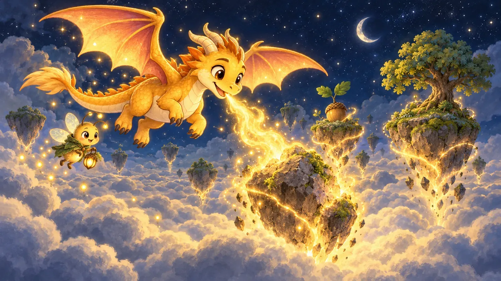
Myten
I början fanns bara natten och molnen. Det fanns ingen upp och ingen ner, för ingenting var varmt. En natt föll en liten stjärna ner i molnen, och där låg den och glödde, alldeles ensam. Molnen runt den blev varma, och det varma började stiga.
Ur glöden kläcktes en drake, inte större än en katt. Hon hette Solvinge. ”Varför kan jag inte flyga högre?” frågade hon. Och natten svarade: ”För att ingen flyger högt ensam.”
Då blåste hon sin eld på en sten i molnen, och stenen blev varm och steg. Hon blåste på en till, och en till, tills de låg som en skärgård uppe i himlen.
Så säger man i skären
”Värm varandra, så flyger ni.”
”Det varma stiger, det kalla sjunker.”
”Ingen flyger högt ensam.”
Det är inte bara talesätt. Det är så man flyger i Glödvägen: en tänd glödskål sänder varm luft uppåt, och den bär båda drakarna.
Ur Glimmas fältbok
Elva skär har namn på kartan. Här är åtta av dem, så som Glimma har antecknat dem.

Hemma
Sju dörrar på rad, äldre än någon minns, med varsitt tecken som ingen kan läsa. Bredvid varje dörr en lykta. Förr hette gården Solgläntan.
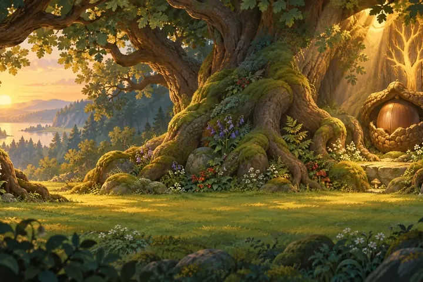
Under Stora Eken
Skogsfolket växer av ljus. De flesta är bara blyga. Gå lugnt och tala lågt.
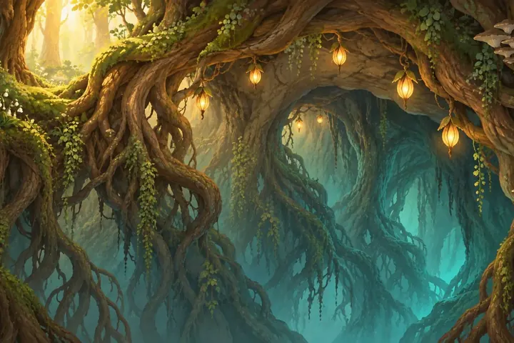
Under rötterna
Därnere är det mörkt, men aldrig tomt. Den som lyssnar hör trummor av svamp och trådar som spinns av varm rot.
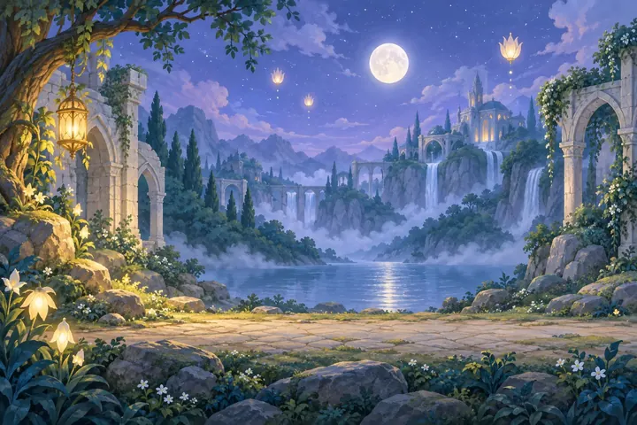
Hos Månhovet
Nattens folk är artiga och lite högtidliga. Väck dem inte i onödan. De vaktar skärgårdens drömmar.
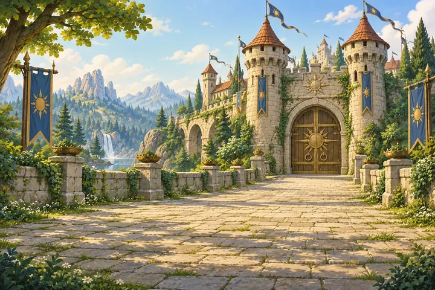
Hos urmakarna
Allt som tickar och klingar bor här. Urmakarna tror att allt går att förstå, och de flesta av deras vänner är byggda av mässing och mod.
Där tiden somnade
De äldsta i skärgården pratar inte mycket. De visar. Att få följa någons fotspår är det största förtroendet man kan få.
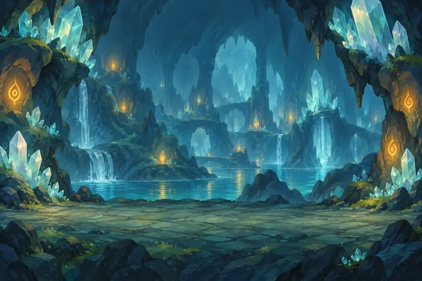
Där ljuset minns
Kristallerna lever långsamt och sjunger när ljus går genom dem. Deras vänner glittrar, för de har bott i ljus i hela sitt liv.
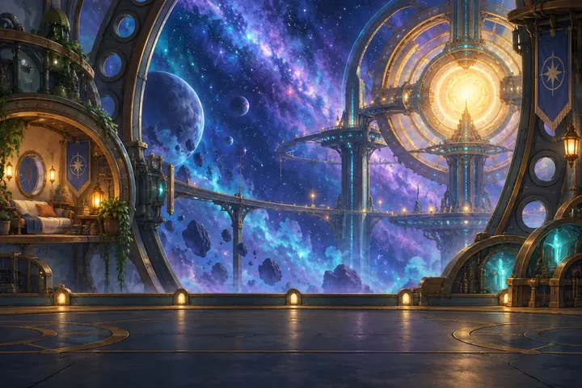
Vid kanten
Ute vid kanten blåser det, och luften är tunn. Den som bor där seglar, lotsar och tittar långt. Och ibland kommer något ner från stjärnorna.
Längst i norr, utanför kartan, ligger Frostkanten. Under allt ligger molnhavet, med det som sjönk. Dit går inte Glimma.
De ni möter först
En vinter när lyktorna var färre än någonsin kom Luma upp ur Rotgrottorna med två kalla ägg i famnen. Hon ställde sin lykta mellan dem och lät den brinna en hel vinter. En natt, alldeles tyst, sprack skalen. Den ena ungen andades gul eld, den andra turkos.

Elden är varm och gyllene som en eld i en spis. Flyger först och tänker sen. Rädd för att inte hinna.

Elden är sval och klar som solljus genom vatten. Tittar först och flyger sen. Rädd för att någon ska bli lämnad kvar.
Lysflugan som pekar när ni inte vet vart ni ska. Hon säger hellre ”ska vi titta?” än ”gör så här”. Vad hon bär i sin lykta säger hon aldrig.
Den äldsta lysflugan i gläntan, och den som berättar. Hon höll sig vaken när nästan alla andra somnade.
Det Glimma inte berättar i kväll
”Det är sent. I morgon ska jag berätta mer. Nej, inte i kväll.”
Resten får ni upptäcka själva
Två vägar dit
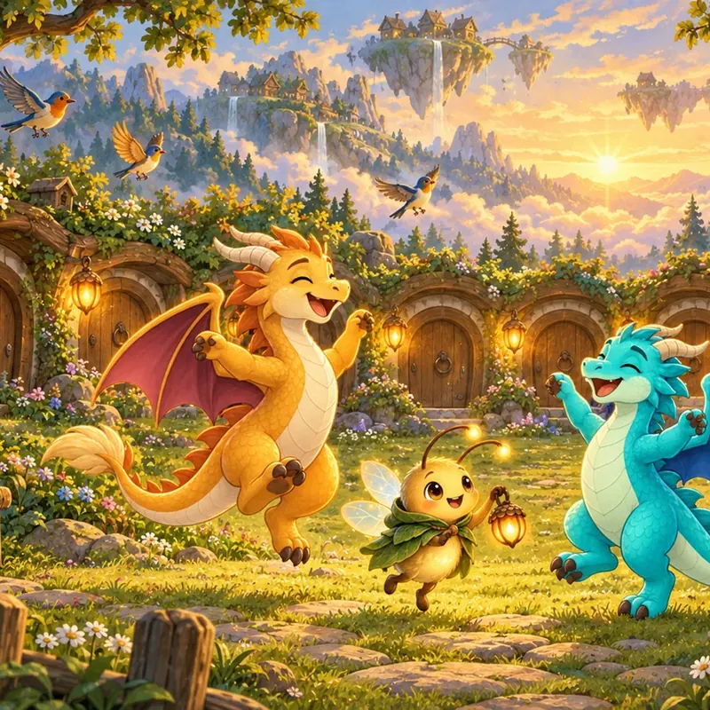
Flyg som Brasa och Bölja, tänd de sju lyktorna och ta hem ljuset till gläntan.
Upptäck spelet →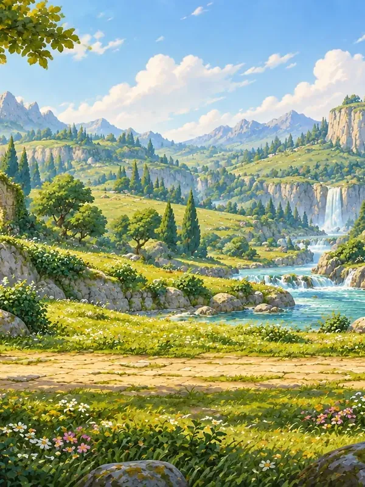
Lek med bokstäver och siffror på arton skär, och lär känna 144 av dem som bor där.
Upptäck spelet →